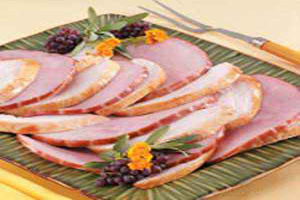
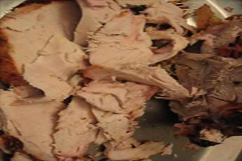
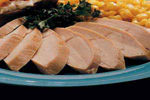
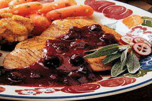
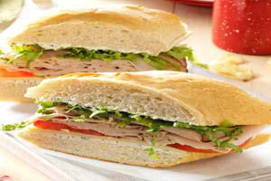

- Recipes
Turkey with Ham Recipe
Brazilian-Syle Turkey with Ham Recipe
Ingredients Needed:
Procedure:
1. Remove giblets from turkey and discard. Place a turkey-size oven roasting bag inside a second roasting bag; add turkey. Place in a roasting pan. Combine the salt, pepper and garlic; rub over turkey. 2. In a large bowl, combine the vinegar, oil, tomatoes, peppers and parsley. Pour over turkey and into cavity. Squeeze out as much air as possible from bag; seal and turn to coat. Refrigerate for 12-24 hours, turning several times. 3. Drain and discard marinade. Skewer turkey openings; tie drumsticks together. Prepare grill for indirect heat, using a drip pan. Using long-handled tongs, moisten a paper towel with cooking oil and lightly coat the grill rack. 4. Place turkey over drip pan and grill, covered, over indirect medium heat for 2 to 2-1/2 hours or until a meat thermometer reads 180°, tenting turkey with foil after about 1 hour. 5. Let stand for 20 minutes before slicing. Meanwhile, warm the ham. Layer turkey and ham slices on a serving platter. Yield: 12 servings plus leftovers.
Christmas Turkey
Brazilian Christmas Turkey
Ingredients Needed:
Procedure:
1. Place turkey (or turkey breast) and all other ingredients in a large oven roasting bag, seal tightly with no air and place in a large dish in the refrigerator to marinate overnight (actually, mine marinated for nearly 2 days--). 2. When ready to cook, preheat oven to 425 degrees F. 3. Remove turkey from marinade and place in a large roasting pan. 4. In a strainer, drain liquid from the vegetables and seasonings; place vegetables and seasonings in the turkey cavity. 5. Roast, covered with foil, for 30 minutes at 425 degrees; reduce oven temperature to 350 degrees and roast about another 3 to 3-1/2 hours (for turkey breast; for a whole turkey, adjust your time accordingly), basting periodically. 6. Uncover the last 30 minutes or so for browning of the turkey. 7. Makes the most excellent turkey sandwiches.
Marinated Turkey
Brazilian Marinated Turkey for Two Recipe
Ingredients Needed:
Procedure:
1. Place the turkey in a shallow glass dish. Combine remaining ingredients; mix well. Set aside 1/3 cup; cover and refrigerate. Pour the remaining marinade over turkey. Cover and refrigerate 4 hours or overnight. 2. Drain and discard marinade. Place turkey in an ungreased 11-in. x 7-in. baking dish. Pour reserved marinade over turkey. Cover and bake at 350° for 30 minutes. Uncover and bake 20-30 minutes longer or until no longer pink, basting twice. Slice and serve immediately. Yield: 2 servings
Turkey with Cranberry Sauce
American-Turkey with Cranberry Sauce Recipe
Ingredients Needed:
Procedure:
Cut tenderloins widthwise in half. Slice each half lengthwise in half, but do not cut all the way through. Open and flatten each piece. Sprinkle both sides with poultry seasoning. In a large skillet over medium-high heat, cook turkey in oil and butter for 3-4 minutes on each side. Reduce heat to medium-low; cover and cook for 12-15 minutes or until juices run clear. Remove turkey to platter and keep warm. Add cranberry sauce, jelly, mustard and allspice to skillet; simmer for 2-3 minutes. Spoon over turkey. Yield: 4 servings.
Turkey Hero Recipe
American-Turkey Hero Recipe
Ingredients Needed:
Procedure:
In a small bowl, beat the first four ingredients until smooth. Spread on both cut surfaces of bread. Layer lettuce, turkey, cheese and tomatoes on bottom half of bread. Top with the other half. Cut into serving-size pieces. Yield: 6 servings.